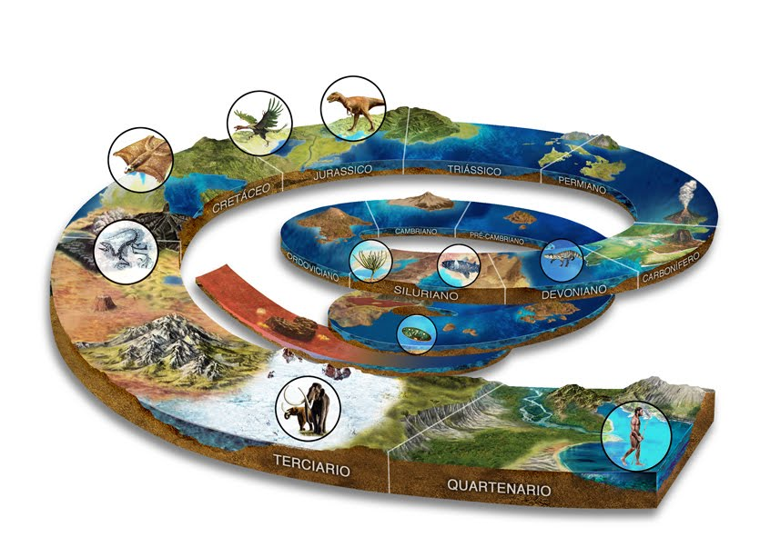

Origen e Hitoria de la Geologia
El estudio de la materia f�sica de la Tierra se remonta a la Grecia antigua, cuando Teofrasto (372-287 aC) escribi� la obra Peri lithon (Sobre las rocas). En la �poca romana, Plinio el Viejo escribi� en detalle de los muchos minerales y metales que se utilizan en la pr�ctica, y se�al� correctamente el origen del �mbar. Algunos estudiosos modernos, como Fielding H. Garrison, son de la opini�n de que la geolog�a moderna comenz� en el mundo isl�mico medieval. Abu al-Rayhan al-Biruni (973-1048) fue uno de los primeros ge�logos musulmanes, cuyos trabajos inclu�an los primeros escritos sobre la geolog�a de la India, la hip�tesis de que el subcontinente indio fue una vez un mar. El erudito isl�mico Avicena (981-1037) propuso una explicaci�n detallada de la formaci�n de monta�as, el origen de los terremotos, y otros temas centrales de la geolog�a moderna, que proporcionan una base esencial para el posterior desarrollo de esta ciencia. En China, el erudito Shen Kuo (1031-1095) formul� una hip�tesis para el proceso de formaci�n de la Tierra, basado en su observaci�n de las conchas de los animales f�siles en un estrato geol�gico en una monta�a a cientos de kil�metros del mar, logr� inferir de que la Tierra se form� por la erosi�n de las monta�as y por la deposici�n de sedimentos. Durante los primeros siglos de exploraci�n europea3 se inici� una etapa de conocimiento mucho m�s detallado de los continentes y oc�anos. Los exploradores espa�oles y portugueses acumularon, por ejemplo, un detallado conocimiento del campo magn�tico terrestre y en 1596, Abraham Ortelius vislumbra ya la hip�tesis de la deriva continental, precursora de la teor�a de la tect�nica de placas, comparando las costas de Sudam�rica y �frica.[cita requerida] A Nicol�s Steno (1638-1686) se le atribuye el Principio de la superposici�n de estratos, el principio de la horizontalidad original, y el principio de la continuidad lateral: tres principios que definen la estratigraf�a. La palabra Geolog�a fue utilizada por primera vez por Jean-Andr� Deluc en 1778 e introducido como un t�rmino establecido por Horace-B�n�dict de Saussure en 1779. William Smith (1769-1839) dibuj� algunos de los primeros mapas geol�gicos y comenz� el proceso de ordenar cronol�gicamente los estratos rocosos mediante el estudio de los f�siles contenidos en ellos. James Hutton es a menudo visto como el primer ge�logo moderno. En 1785 present� un documento titulado "Teor�a de la Tierra para la Sociedad Real de Edimburgo". En su ponencia, explic� su teor�a de que la Tierra deb�a de ser mucho m�s antigua de lo que se supon�a, con el fin de permitir el tiempo suficiente para que las monta�as puedan haber sido erosionadas y para que los sedimentos logren formar nuevas rocas en el fondo del mar, y estos a su vez afloren a la superficie para poder convertirse en tierra seca. Hutton public� una versi�n de dos vol�menes de sus ideas en 1795. Los seguidores de Hutton fueron conocidos como plutonistas porque cre�an que algunas rocas se formaron por volcanismo, que es la deposici�n de lava de los volcanes, a diferencia de la neptunistas, quienes cre�an que todas las rocas se hab�an formado en el interior de un gran oc�ano cuyo nivel disminuy� gradualmente con el tiempo. Charles Lyell public� su famoso libro Principios de geolog�a en 1830. El libro, que influy� en el pensamiento de Charles Darwin, promovi� con �xito la doctrina del uniformismo. Esta teor�a afirma que los procesos geol�gicos que han ocurrido a lo largo de la historia de la Tierra, a�n se est�n produciendo en la actualidad. Por el contrario, el catastrofismo es la teor�a que indica que las caracter�sticas de la Tierra se formaron en diferentes eventos individuales, catastr�ficos, y que la tierra se mantuvo sin cambios a partir de entonces. Aunque Hutton crey� en el uniformismo, la idea no fue ampliamente aceptada en el momento. Gran parte de la geolog�a del siglo XIX gir� en torno a la cuesti�n de la edad exacta de la Tierra. Las estimaciones variaban enormemente de unos pocos cientos de miles, a miles de millones de a�os. En el siglo XX, la dataci�n radiom�trica permiti� que la edad de la Tierra se estimase en aproximadamente dos mil millones de a�os. La conciencia de esta enorme cantidad de tiempo abri� la puerta a nuevas teor�as sobre los procesos que dieron forma al planeta. Hoy en d�a se sabe que la Tierra tiene aproximadamente 4500 millones de a�os. Los avances m�s importantes en la geolog�a del siglo XX han sido el desarrollo de la teor�a de la Tect�nica de placas en la d�cada de 1960, y el refinamiento de las estimaciones de la edad del planeta. La teor�a de la tect�nica de placas surgi� a partir de dos observaciones geol�gicas por separado: La expansi�n del fondo oce�nico y la deriva continental. La teor�a revolucion� completamente las ciencias de la Tierra.
Noticias Geologicas

Noticias Geologicas
Departamento de geocicias Universidad Nacional de Colombia